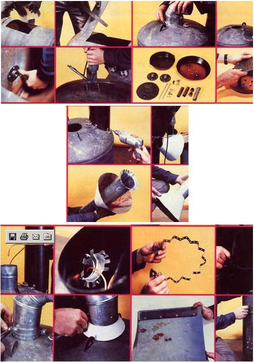
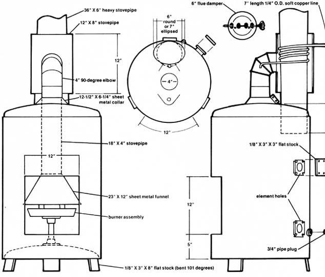
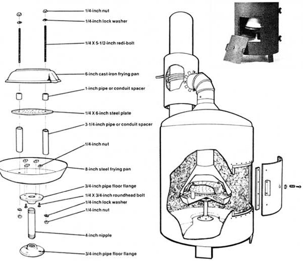
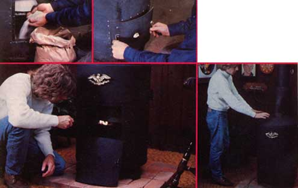
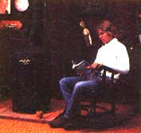

UPDATE & ANNOUNCEMENT, March 2006:
I read with interest and some concern the letter from Mary Hammersmith in the February/March 2004 issue regarding the waste oil heater from the September/October 1978 issue. I helped build that heater in 1978. I used it in my home and wrote the original article about it.
Here's why the fly in the ointment: When this stove was designed and built, most motor oil was formulated for larger-displacement, precatalytic-era vehicles. As demands of fuel economy and federal emission standards began to affect auto manufacturers, they had to make smaller, harder-working engines that operated at higher temperatures than the older engines, especially with the introduction of catalytic-converter systems in the mid-1970s. Subsequently, motor oil sometimes flashed in the crankcases of vehicles, and in the early 1980s, an anti-flashing agent was added to motor oils for safety reasons. This raised the oil's combustion temperature significantly. Naturally, the performance of the waste oil heater was affected, and the original Mother stopped selling plans when complaints brought the problems to light.
Modern waste oil shop heaters use a different technology than Mother's old drip-style burner. The new UL- and EPA-approved models have special pre-heaters and pumped-injection systems that vaporize fuel for efficient combustion at high temperatures. The difference between Mother's waste oil burner and the commercial models is vast, and I can say with a fair degree of confidence that the EPA would never approve Mother's technology if it were a manufactured unit.
Richard Freudenberger
Hendersonville, North Carolina
What's that, bunky? You say the skyrocketing cost of oil, electricity, coal, and other fuels has you scratching for a less expensive way to heat your shop, garage, or home this coming winter?
Well scratch no further! Because MOTHER is here to tell you about a dandy little furnace that her researchers have developed . . . which costs next to nothing to build and is even less expensive to operate (since it burns the used motor oil that tens of thousands of service stations across the country will still give away free to anyone who'll haul it off).
Yep. We're sure that you've probably already cringed at the idea of burning "dirty old" crankcase oil in a space heater set up right there in, say your nice clean living room. But extensive tests conducted by MOTHER's research department have confirmed two things: [1] drain oil-when used as a fuel-can produce a considerable amount of heat, and [2] if fed to a properly designed burner, crankcase oil burns both clean and without any detectable odor.
And you certainly can't beat the price! Old motor oil is still available (by the 55-gallon drum) for the asking from at least three out of four of the service stations on the North American Continent. And-while it is true that a sprinkling of automotive garages and filling stations now charge a few cents a gallon for their waste oil-it's just as true that an equal sprinkling will pay to have you tote the crankcase drainings away. It all averages out.
Furthermore, as nearly as MOTHER's environmentally oriented researchers can determine, even the planet benefits when old motor oil is burned in the furnace you see here . . . for at least two reasons: [1] Every gallon of used drain oil that gets recycled "one more once" as a fuel roughly equals just one less gallon of fresh petroleum which must be pumped out of the ground and processed, and [2] recycling the spent motor oil this way creates far less pollution than-as is customarily done-"disposing of" the liquid by pouring it into a landfill, river, lake, or ocean.
MOTHER's waste oil stove (which throws out more heat than some $500 oil furnaces we've seen) can be constructed so inexpensively (for around $36) largely because its major "raw materials" are scavenged from a junked electric water heater. Such heaters are available "free for the hauling" from the alleys behind appliance or plumbing and heating stores all over the U.S. and Canada all the time. Or, it you want a real selection of the units to choose from, take a short "shopping" trip out to your friendly neighborhood or small town dump.
Just make certain that the discarded water heater you pick up is an electrically fired model (a gas-burning heater has a vent running up through its middle that makes it too difficult to convert). And take care NOT to choose a heater with a galvanized tank (very easily identified by its silver-colored coating) since galvanized metal gives off toxic fumes when heated. (Water heater manufacturers tell us that only about 10% of the units ever made here in the United States have galvanized tanks. So look a little. The odds are nine-to-one in your favor.)
Above all, do NOT try to substitute a 55-gallon drum for the electric water heater tank shown here. The tank we've specified is the only way to go for at least four reasons:
[1] The metal walls of a junked water heater reservoir are at least twice as thick as the walls of a 55-gallon barrel. And that heavier mass of metal will [a] store and radiate heat more efficiently and [b] withstand burnout far more effectively than the lighterweight skin of a drum. Our experiments, in fact, indicate that the life expectancy of a stove or furnace made from a good junked water heater tank can be up to five times as long as a comparable stove or furnace constructed. from a 55-gallon drum. With care, the water heater tank should even last a lifetime.
[2] Standard 55-gallon barrels have "girth ribs" . .. which are ugly and do nothing but get in the way when the drums are drilled and cut during their conversion into stoves. Water heater tanks have no ribs ... hence, none of the problems associated with them.
[3] Thanks to its thin skin and ribs, it's almost impossible to turn a 55-gallon drum into an airtight, "controlled combustion" stove. The heavy walls and superior construction of a water heater tank, on the other hand, practically guarantee an airtight finished product.
[4] There's such a lively market for recycled barrels these days that the drums now some. times cost as much as $7.00 each. Discarded water heaters, however, can be picked up for free by anyone who'll haul 'em away. And when you can get a better product for less money . . . well, why not?
Almost any electric water heater tank with a capacity of 30 to 50 gallons should work just fine when converted into a waste oil-burning space heater. Our personal favorite, though, is a 40gallon unit (measuring 20 inches in diameter and 32 inches high): It's easy to handle, makes a goodlooking stove or furnace, and generally comes housed in a square sheet metal cabinet which can be cannibalized quite deftly for some of the oil burner's internal parts.
Needless to say, any junked water heater that you're thinking of recycling should be stripped (of its sheet metal covering and insulation) "in the field" and its tank checked for excessive corrosion or leaks (look for splotches or streaks of rust, usually running from a seam or weld). There's no use hauling a defective container home . . . and then right back to the dump again.
OK. Got a good, sound tank that you like? Fine. Set it up on end and-while referring to the drawings and photos with this article-picture in your mind's eye what it'll look like after it's converted into a furnace. Remember that you'll want the finished product's access door opposite (or as nearly opposite as possible) the tank's seam and all unsightly fittings and element holes.
Bear in mind, too, that there are a great many differences in junked water heater tanks. Some just naturally seem to have all their fittings in the right places ... and others don't. Which may mean that you'll have to wander a little from the design shown here to make any particular recycled container do the job. (This "wandering", of course, can work to your advantage. For Instance: Thanks to an "odd" pipe fitting already on the tank that you see in the accompanying photos when we found it, the only way we could mount a round six-inch-diameter flue stack on our finished furnace was by squeezing the vent pipe until it had a 5 X 7-inch oval cross section. Sure, that was a little more work ... but It certainly gave our stove a custombuilt, "store-bought" look!)
MOTHER'S research team has purposely designed this waste oil heater as a simple, bolt-together unit that anyone even reasonably familiar with hand (or power) tools should be able to assemble. TIP: If you have-or have access to-a cutting torch and know how to use it, you'll probably find that "burning 'em out" Is the fastest and easiest way to make the metal cuts this project calls for. Otherwise, an electric saber saw-preferably an industrial-duty model-is a mighty handy tool to have (even if you have to rent one a few hours for the going rate of $12 a day).
Start your stove's construction by chalking out all the holes that the accompanying three-view drawings show you'll have to cut in the walls of your salvaged water heater tank, lay the container on its side, and torch or saw out the access door. Then stand the tank upright and cut the holes for the intake and chimney stacks.
CAUTION: Do not make the intake and chimney stack holes any bigger than absolutely necessary (if you cut them too large, they'll leak air and you'll only have to come back later and fill in around the stacks with furnace cement). In fact, it's better to hold the openings a mite on the small side (just to be safe), and then spend a few minutes filing them on out to size. Actually, there's no "wasted" time involved in such a procedure at all ... since you'll want to file and smooth off every sawed or torched metal edge on your finished stove anyway.
Now turn the tank over onto its top and drill the holes in the container's bottom for the pipe stand which will support the furnace's burner assembly. Then form the stove's legs in a vise, position them on the bottom of the stove, drill through the legs and furnace bottom, and bolt the legs in place. The pipe stand should also be bolted in place while the tank is still upside down.
Next, turn the old water heater tank right-side up (so that it's standing on its new "feet") and use standard 3/4-inch pipe plugs to cap all the pipe openings that were in the container when you found it. While you're at it, seal off the heating element holes with 1/8 X 3-inch square steel plates bolted to both sides of the tank's wall to form "sandwiches".
See! We told you this is a bolt-together project!
The heart of MOTHER's waste oil space heater is its burner assembly. This consists of a perforated, six-inch, cast-iron frying pan . . . a six-inches-indiameter round piece of perforated 1/4-inch-thick steel plate . . and an eight-inch steel frying pan bolted together into a sandwich (with pipe spacers between the major components). The assembly is supported by a four-inch nipple of 3/4-inch pipe and two 3/4-inch floor flanges.
Every burner, of course, must have a vent. In this case a chimney stack (or flue) of 6-inch stovepipe, which extends at least six inches down into the heating chamber. This flue can be equipped with a damper, if you desire (although we haven't found such an addition necessary).
Once the chimney stack is secured in place (we used bolts and 3/4-inch-wide angle iron tabs), wrap 1/4-inch O.D. soft copper tubing around it three times, lead the lower end of the line over to a position directly above the center of the furnace's burner assembly, and form a feeder spout in the tubing as shown.
When the copper tubing which is wrapped around the vent stack is covered with 12 inches of larger (8-inch) stovepipe and a 90° elbow of 4-inch stovepipe is mounted to the side of the 8-inch pipe so that it fits down over the copper tubing's lower end . . . a pre-heater (one of the reasons that MOTHER's waste oil furnace burns so efficiently and with such a clean flame) is formed.
An 18-inch length of 4-inch stovepipe is then attached to the lower end of the 4-inch elbow and a sheet metal (from the salvaged water heater's "skin") funnel or cone-with a diameter across its bottom opening roughly equal to the diameter of the stove's burner assembly-is attached to the bottom of the pipe.
As you can imagine, this whole "pre-heater, 4-inch stovepipe, funnel" assembly-once completed-is pretty much free to move up or down as it sees fit . . . unless you lock it into its optimum operating position (the mouth of the funnel should be just about an inch above the top rim of the flinch steel frying pan). No problem. A small sheet metal collar-which rests on top of the furnace and which can be clamped tightly around the 4 inch stovepipe after it has been raised or lowered as necessary-fills the bill nicely as the only locking mechanism you'll need.
The oil burner's door rests against a frame bolted to the inside of its opening and is secured by a lip bolted to the inside of one of its edges and a window latch bolted to the outside of the opposite edge. A short piece of angle iron attached to the door for a handle makes the whole assembly a trifle easier to remove and replace on the rare occasions when you'll want to take it off. And a half-inch hole drilled through the center of the door and covered with a little flap of sheet metal hinged on a small bolt serves as a peephole (through which you can check on your furnace's flame if you ever have questions about its color, height, etc.).
Paint your finished stove with Thurmalox 270 flat black paint (see sidebar), set the unit in place and bolt it down, fill its burner assembly with crushed asbestos (or, better yet, Insblock ... an asbestos brick manufactured by the E.P. Green Company and sold all over the country), and fill the bottom of the furnace with sand. You can even add a decorative metal eagle to the new heater, if you want to really spruce it up for the living room! Then hook up a gravity-feed oil line in and the chimney stack out according to approved fuel and vent practices . . . light up, sit back, and enjoy the warmth!
If MOTHER's extensive testing of this furnace is any indication, you're going to have to go a long, long way to beat the unit for both economy and heat output. The prototype you see here cost us the grand total of $36.14 to construct .. . and we bought almost everything that went into the stove except the scrounged water heater tank that makes up its guts. You can probably cut that figure in half quite easily if you have even a halfway decent selection of stovepipe, scrap metal, screws, bolts, etc., lying around the shop. Either way, though, it shouldn't take you much longer than one good day to put this whole project together . . . and any time you can add one long day to $36.14 or less and come up with a $500 stove, you ain't doin' bad!
But, of course, that's only the beginning! Because the only thing less expensive than constructing MOTHER's incredibly low-priced waste oil burner . . . is operating the unit once it's put together!
In the first place, the furnace throws out an awful lot of Btu's (no, we don't really have any way to accurately measure its heat output directly . . . but, as near as we can calculate, the burner produces 21,000 usable Btu's an hour, which is enough to heat a well-insulated small house).
In the second, MOTHER's furnace pours out all that heat while merely sipping its fuel (when adjusted for maximum efficiency, the unit consumes less than one quart of oil an hour . . . as opposed to the one-third gallon (or more!) that a comparably sized (and very expensive!) commercial fuel oil burner drank when our researchers tested it against MOTHER's stove.
And in the third place, MOTHER's furnace was designed to operate on "free for the hauling" waste crankcase oil! It's little wonder, then, that we figure our little gem can pay back its modest initial cost in less than two weeks. And, after that, it operates absolutely free!
It's not easy to come up with that kind of economy, of course, in this day and age . . . unless you really work at it. Which is exactly what MOTHER's researchers have done.
MOTHER's waste oil burner has been under development for months, and the stove you see here is a "sixth generation" of our original design. Quite frankly: If there's a simpler, easier to build, more economical, or more efficient way to [1] recycle used motor oil Into [2] free heat for the coming winter . . . we'd like to know about it. There may well be, of course . . but until someone shows into us, we believe that MOTHER's "bolt it together in one day from $36 worth of materials and then run it on no-cost fuel" furnace is just about the ultimate way you're going to find to keep warm during the cold months ahead.
It's true that the boys down in MOTHER'S Research Center worked long and hard to develop the super-simple and super-efficient waste oil burner described in the accompanying article. And some of the folks up here in MOTHER'S editorial offices think the magazine's research team even may have worked a little longer than necessary ... simply because they dreaded facing a problem they knew-sooner or later-they'd have to face: What would they paint the stove with once it was finished?
As MOTHER'S shop crew knows only too well, the answer to that particular question ain't at all easy to come by. Dennis Burkholder, especially, has slapped more coats of more different kinds and brands and formulations of "guaranteed, heat-resistant, new, improved, space-age, (and expensive)" paint on more test stoves-and then watched it all burn off the first time those furnaces or heaters were fired up-than he cares to remember.
In short: An awful lot of companies now market a bewildering variety of "heat-resistant" (whatever that means) paints that-for all practical purposes-aren't really worth dipping a brush into.
It is easy to understand, then, why Dennis or someone else down at the research lab merely set the spray can of Thurmalox 270-another of those "heat-resistant" (whatever that means) paints -up on a shelf untested when it came in some time ago. Obviously there was no reason to give it a special test. Obviously it'd simply prove to be a disappointment just like ail the rest of the "heat-resistant" (whatever that means) paints that had failed in the past.
And thus it was that Dennis-while rummaging around looking for something to spray on (and then, of course, peel off) MOTHER's new waste oil burner-found that sample can of Thurmalox 270 hidden away on the back of a shelf. "Might as well try it," he reasoned. "I know it won't work ...but then, nothing else will either and-besides-it'll save us some time chasing around looking for something else that'll fail."
Imagine Dennis' surprise (and every one else's!), then, when the properly sprayed and properly cured Thurmalox 270 not only didn't peel or burn off MOTHER's new stove during its extensive tests ... but didn't even crack, craze, or discolor! Hey! These Dampney guys know what they're doing!
A fast phone call to the company's Massachusetts factory turned up some interesting facts: [1] Thurmalox 270 is different and works the way it does because it's silicone-based, [2] the paint has been specifically formulated to withstand constant temperatures of 1,200°F, and [3] it's so good that many commercial stove manufacturers use it to paint their units at the factory.
So: You can buy other "heat-resistant" (whatever that means) paints manufactured by other companies for $2.00 a can . . . and then watch them vaporize or peel off like a hog with the mange the first time you build a fire in your homemade stove. Or you can shell out $6.00 a can for Thurmalox 270 and-unless you're careless enough to scratch your burner-never have to paint your spiffylooking furnace again.
Personally, we're sold on taking the Thurmalox 270 route and-if you can't find it at your local retail paint or hardware store-you can try writing directly to Dampney's Massachusetts factory. And tell 'em MOTHER sent you!
Saturate the asbestos in the lower frying pan with kerosene. Then loosely crumple several feet of toilet paper and place it on the sand in the back (under the flue) of the burner's main chamber. Light the paper and the soaked asbestos and lock the access door in place.
Now wait until the rapidly burning paper has started a draft for the blazing kerosene and the kerosene has thoroughly heated the burner assembly. Then open the valve on your waste oil line (which has been plumbed up according to good fuel line practice) so that anywhere from 3/4 to one quart of the oil (if you want maximum heat) can drip into the burner each hour.
That's !t! As long as you keep feeding used oil to this stove it'll keep burning it with as clean and as non-polluting a flame as those costly furnaces which consume that expensive "real" fuel oil.
One light-up can last for weeks . . , even keep you going alt winter!
WARNING: NEVER ATTEMPT TO RELIGHT A HOT STOVE WITH KEROSENE, DO NOT OPEN THE ACCESS DOOR WHILE THE STOVE IS IN OPERATION, AND NEVER USE GASOLINE OR OTHER HIGHLY FLAMMABLE FUEL TO START YOUR STOVE!
Total cost for basic stove without external plumbing: $36.14
Total cost for stove complete with external plumbing, accessories, decoration, industrial paint, and cost of plans: $123.02
Tool Needs
Power drill
1/8",13/64",1/4",13/32",and 1/2" drill bits
Industrial saber saw (rental $12 per day) or cutting torch
Aviation snips
Screwdriver
Vise
Hacksaw
Tape measure
Chalk or pencil
Hammer
Vise grips or pliers
Four C-clamps
Flat or half-round file
Level
Square
Tubing cutter
Flaring tool
End wrench assortment
Pipe wrench
Step-by-step instructions for the photos in the Image Gallery:
[1] Start construction of waste oil stove by chalking off and cutting our access door on the side of the stripped water heater tank. [2] All cuts-whether torched or sawed-should be filed smooth. [3] The stack holes on tank's top are the next chalked and... [4] cut. [5] Tank is then turned upside down so the support flange for stove's burner assembly can be mounted and... [6] the furnace's legs bolted to the container's bottom. [7] Here's all the hardware for the burner assembly which, like everything else... [8] justg bolts together. [9] The chimney stack is pushed at least six inches down into its hole and secured with bolts and angle iron tabs. [10] A funnel is made from some of the junked water heater's sheet metal skin and... [11] fitted to the lower end of intake stach, which is then... [12] pushed through access door and wedged up through its hole in the top of the converted tank. [13] The copper tubing fuel feeder is then wrapped around the chimney stack and its end positioned over the intake stack. [14] A 4-inch, 90 degree elbow is fitted to a hole in the side of a 12-inch-long section of 8-inch stovepipe and this ""pre-heater"" is positioned over the feeder tubing [15] Although not absolutely necessary, a spacer ring can be bent up from hanger strap and... [16] used to center pre-heater stovepipe on chimney stack. [17] ""Pre-heater/intake stack"" assembly is locked into position with a simple clamp. [18] A collar -- cut from the old water heater's sheet metal skin -- can be added to cover the clamp. [19] View of inside of partially completed furnace door. [20] Salvaged tank's heating element holes are sealed with 1/8- inch steel plates.
|
 Refer to the article for step-by-step instructions. |
 [1] The completed furnace's burner assembly is filled with crushed asbestos or an asbestos brick. As an added fire precaution, the bottom of the stove is then filled with sand. [2] A short angle iron ""handle"", a peephole covered by a movable metal flap, and a window latch fastener complete the furnace's door. [3] MOTHER's waste oil burner gets a light from Richard Freudenberger [4] The blaze is just getting started ... and already Richard can feel the heat |
 |
|
 |
 |
|